Gesundheitsprotokoll
CorSync hält Blutdruck, Puls, Medikamente und Verlauf strukturiert an einem Ort.
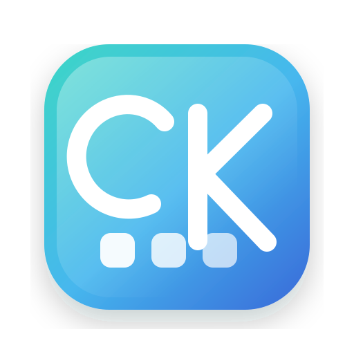
CoreKit StudioCoreKit Studio für iPhone & Apple Watch
CorSync, PureTank, Korb, FlexRente, KlarWetter, LiquidCinema und ThaiEntry verbinden moderne Apple-Plattformen mit klaren Alltagsaufgaben: Gesundheitsdaten dokumentieren, intelligenter tanken, Einkäufe synchron planen, Altersteilzeit besser einschätzen, Wetterlagen verstehen, Film-/Serieninfos organisieren und die Thailand Digital Arrival Card vorbereiten. Neu: Igelberts Garten – ein Match-3-Spiel für entspannten Rätselspaß.
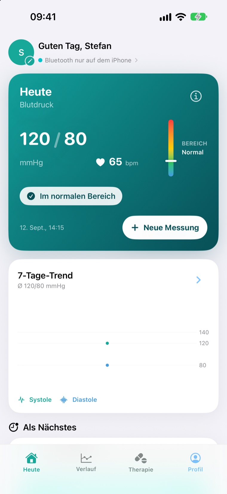
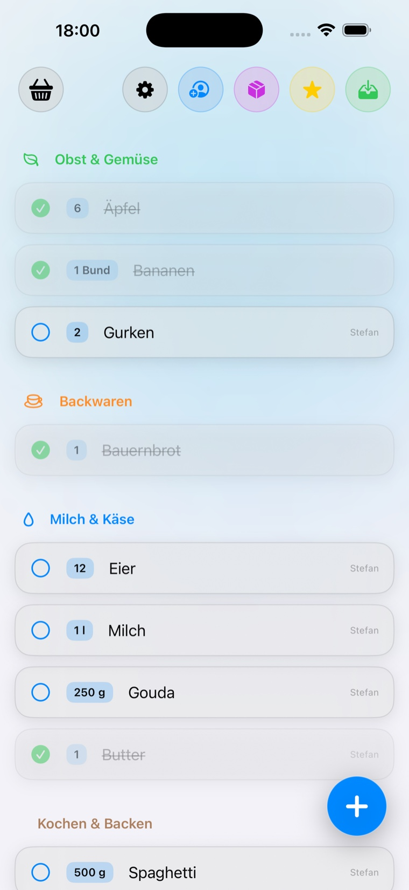
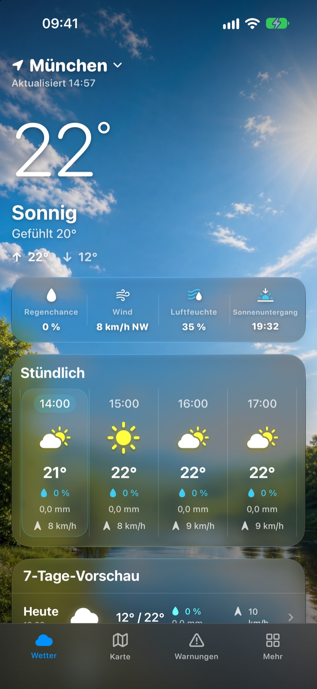
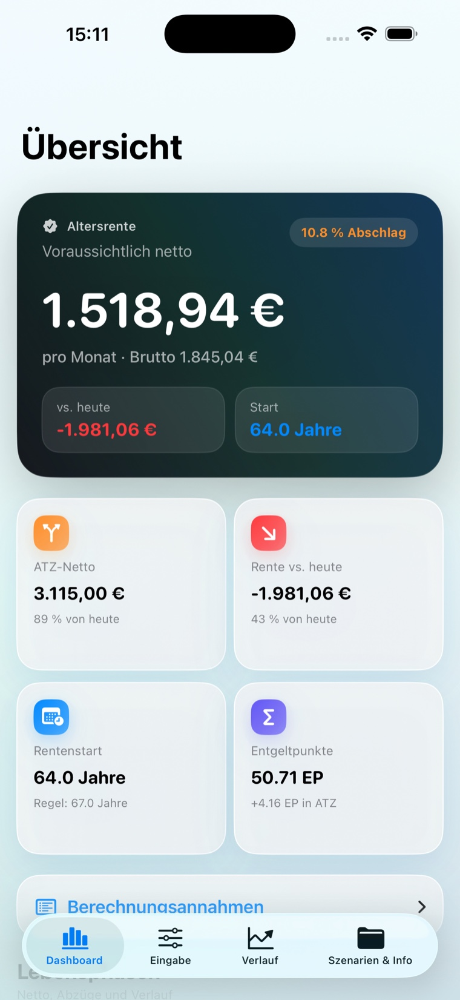
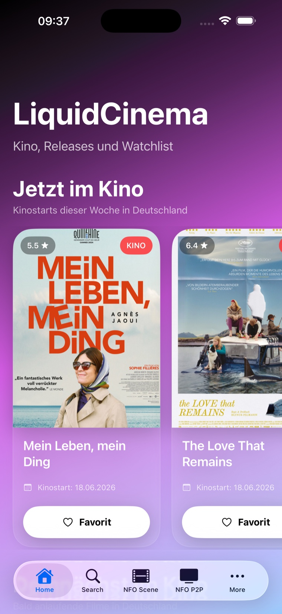
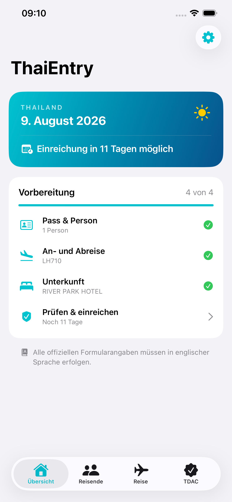
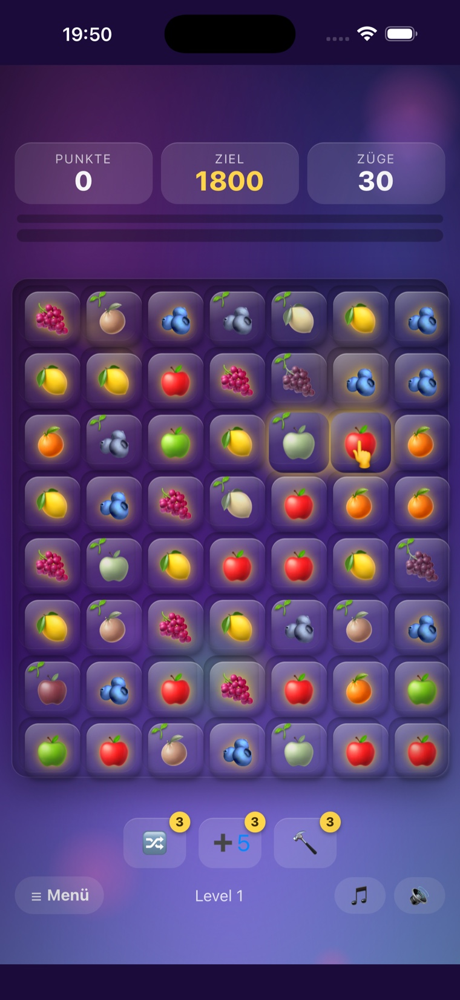
Apps mit Fokus
CoreKit Studio entwickelt fokussierte Apps für den Alltag: CorSync für strukturierte Blutdruck- und Gesundheitsdaten, PureTank für Live-Spritpreise und Flottenkarten, Korb für gemeinsame Einkaufslisten, FlexRente als Orientierungshilfe für Altersteilzeit und spätere Altersrente, KlarWetter für ruhige Wetterübersichten und LiquidCinema für Film- und Serieninformationen. ThaiEntry unterstützt Reisende dabei, ihre Angaben für die Thailand Digital Arrival Card lokal und übersichtlich vorzubereiten.
Gesundheit
iPhone, Apple Watch
CorSync unterstützt dich bei der täglichen Erfassung und Verwaltung deiner Blutdruck- und Gesundheitsdaten. Messwerte, Verlauf, Medikamente und Berichte bleiben übersichtlich an einem Ort.
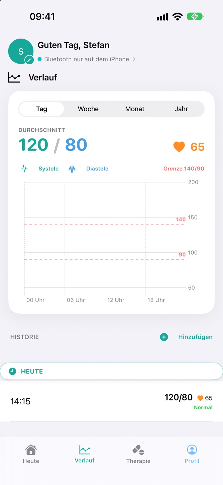
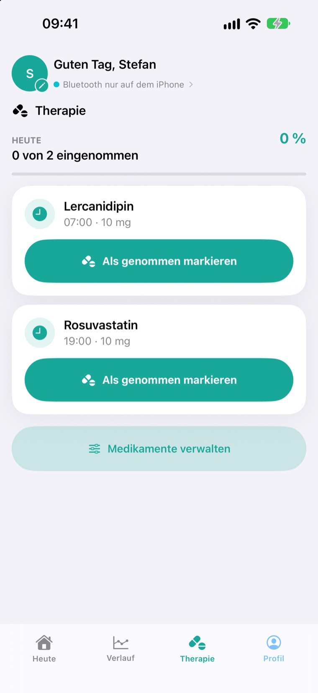
Mobilität
iPhone
PureTank verbindet Live-Spritpreise, Flottenkarten-Intelligenz und native Apple CarPlay Integration in einer hochwertigen App für Fahrer, die nicht irgendeine Tankstelle suchen, sondern die richtige.
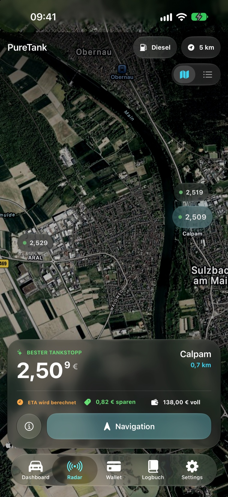
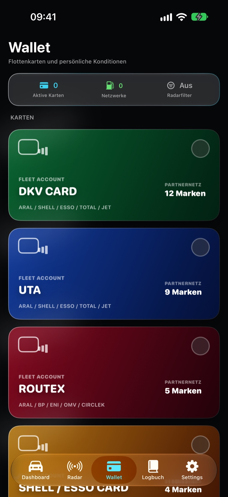
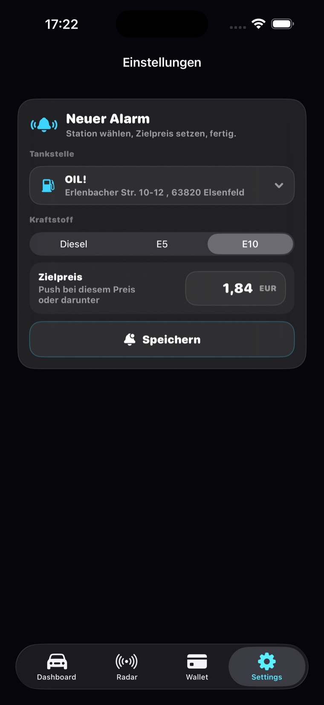
Einkauf
iPhone, Apple Watch
Korb ist eine moderne Einkaufsliste für Paare, Familien und das Apple-Ökosystem. Live-Synchronisation, Apple Watch, Sprachsteuerung und intelligente Favoriten machen den Wocheneinkauf ruhiger und übersichtlicher.
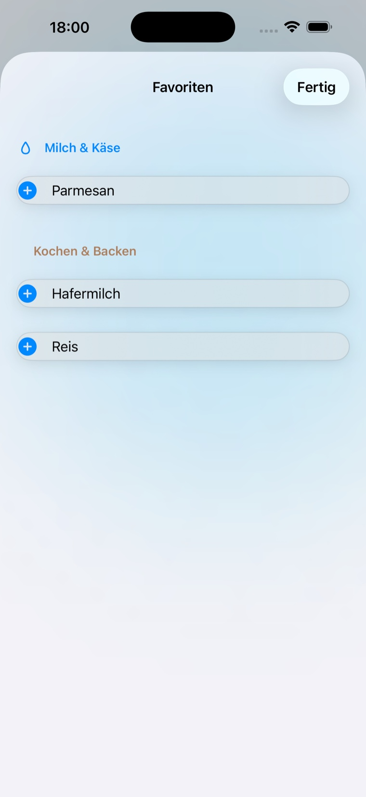
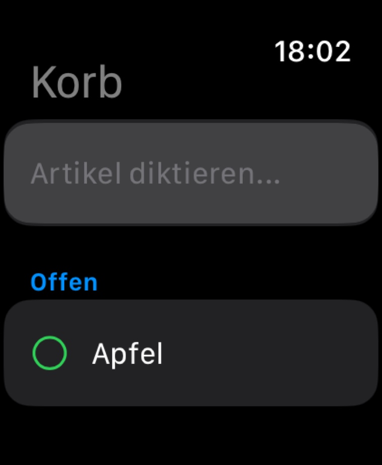
Finanzen
iPhone
FlexRente hilft Arbeitnehmerinnen und Arbeitnehmern in Deutschland, die finanziellen Auswirkungen einer Altersteilzeit besser einzuschätzen. Die App zeigt übersichtlich, wie sich heutiges Einkommen, ATZ-Aktivphase, ATZ-Passivphase und spätere Altersrente auf dein monatliches Netto auswirken können.


Wetter
iPhone, iPad, Apple Watch
KlarWetter zeigt aktuelles Wetter, Vorhersagen und Warnhinweise ruhig und übersichtlich. Temperatur, gefühlte Temperatur, Luftfeuchtigkeit, Luftdruck, Wind, Böen, UV-Index, Pollenbelastung und Regenrisiko sind schnell erfassbar.
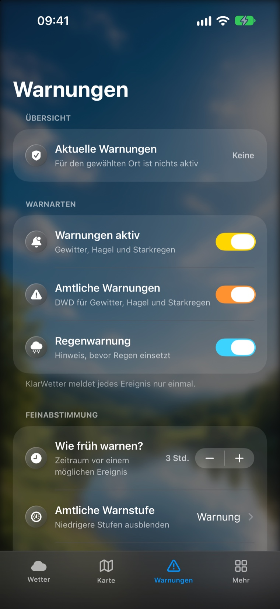
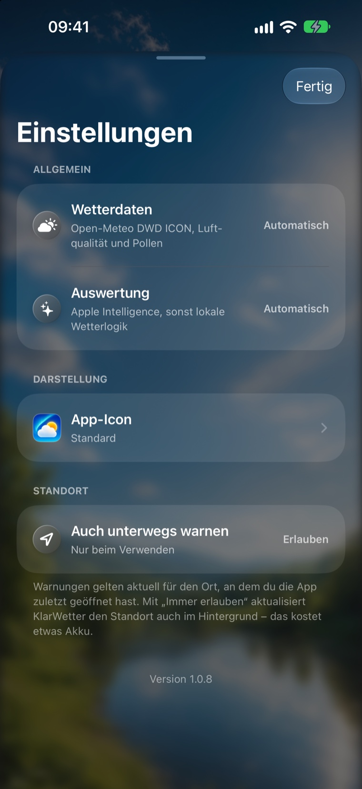
Film & Serien
iPhone
LiquidCinema bündelt Kinostarts, Veröffentlichungen, Trailer, Bewertungen, Watchlists und Verfügbarkeitshinweise in einer modernen App für Film- und Serienfans. Die App dient ausschließlich der Information und Organisation.
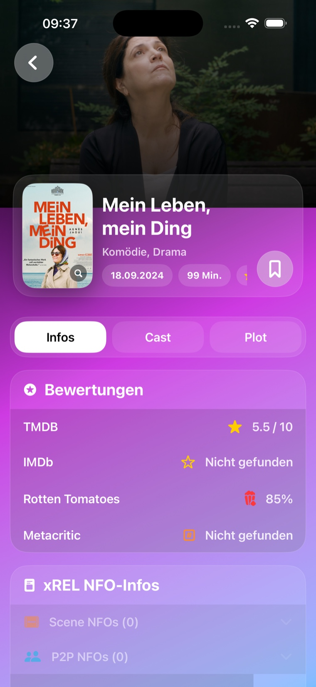
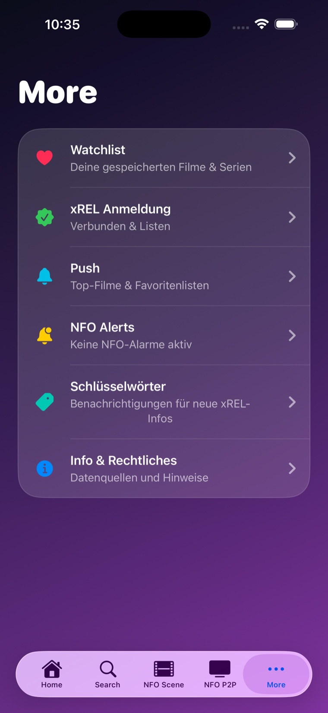
Reise
iPhone
ThaiEntry hilft dir, die für die Thailand Digital Arrival Card benötigten Angaben lokal zusammenzustellen, auf Vollständigkeit zu prüfen und kontrolliert in die offizielle TDAC-Website zu übertragen. Die endgültige Prüfung und Einreichung führst du dort selbst durch.
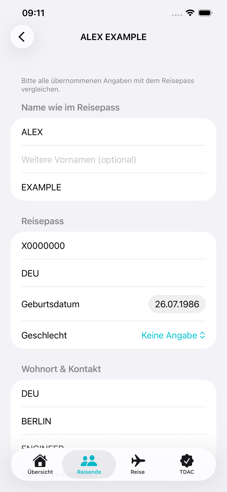
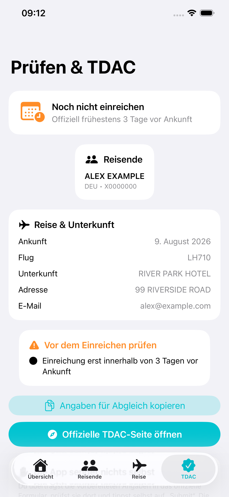
Spiel
iPhone, iPad · Match-3
Der fiese Schimmel-König will den schönsten Obstgarten verfaulen lassen – nur du kannst ihn aufhalten. Tausche saftige Früchte, bilde Dreierketten und rette Apfel, Orange und Traube, bevor der Schimmel sie sich holt.
Funktionen
CorSync hält Blutdruck, Puls, Medikamente und Verlauf strukturiert an einem Ort.
Messdaten können als übersichtlicher PDF-Bericht exportiert werden, etwa zur Vorbereitung auf Arzttermine.
CorSync und Korb nutzen Apple Watch-Funktionen für schnelle Eingaben und wichtige Informationen unterwegs.
PureTank zeigt aktuelle Preise für Diesel, Super E5 und Super E10 auf Basis offizieller Markttransparenzdaten.
Aktive Karten wie DKV, UTA, Routex oder Shell/Esso helfen PureTank, passende Stationen zu filtern.
Korb synchronisiert gemeinsame Listen über iCloud, damit Änderungen auf allen Geräten schnell sichtbar werden.
Korb kann dich automatisch erinnern, sobald du deinen Supermarkt erreichst.
Wiederkehrende Einkäufe lassen sich als Bundles speichern und mit einem Fingertipp hinzufügen.
FlexRente stellt heutiges Netto, ATZ-Phasen und spätere Altersrente verständlich nebeneinander.
Eigene Annahmen zu Bruttoeinkommen, Steuerklasse, Krankenkasse, Tarif und Modell lassen sich speichern und vergleichen.
KlarWetter bündelt aktuelle Werte, Tagesverlauf, 7-Tage-Ausblick und Warnhinweise in einer ruhigen Ansicht.
UV-Index, Pollen, Wind, Böen, Regenrisiko und professionelle Warnquellen helfen bei schnellen Entscheidungen.
LiquidCinema zeigt Metadaten, Trailer, Bewertungen und Verfügbarkeitshinweise an einem Ort.
Favoriten, Watchlists und NFO-Metadaten helfen, Veröffentlichungen übersichtlich zu verfolgen.
ThaiEntry prüft Pass-, Reise- und Unterkunftsangaben vor dem kontrollierten Wechsel zur offiziellen TDAC-Website.
ThaiEntry speichert vorbereitete Daten im iOS-Schlüsselbund und kann optional mit Face ID oder Gerätecode gesperrt werden.
Igelberts Garten lässt Früchte reifen – ernte im richtigen Moment für Bonuspunkte oder räume faule Früchte weg, bevor der Schimmel sie holt.
Igelberts Garten bietet 150 handgemachte Level, Helferfiguren wie Biene Berta und eine erzählte Geschichte – komplett kostenlos.
Die Apps sind auf lokale Einstellungen, iCloud-Synchronisation und möglichst sparsame Datenverarbeitung ausgelegt.
CorSync dient ausschließlich der Aufzeichnung, Anzeige und Verwaltung von Gesundheitsdaten. Die App ersetzt keine professionelle medizinische Beratung, Diagnose oder Behandlung und trifft keine medizinischen Entscheidungen.
PureTank verwendet Preisdaten für Deutschland, die von Tankerkönig bereitgestellt werden (CC BY 4.0). Einstellungen, Favoriten und Flottenkarten bleiben auf deinem Gerät; es werden keine Nutzerprofile erstellt.
Korb speichert Listeninhalte in deiner privaten iCloud. Die App ist werbefrei, nutzt keine versteckten Tracker und gibt deine Einkaufsdaten nicht an Dritte weiter.
FlexRente ist eine Orientierungshilfe und ersetzt keine individuelle Renten-, Steuer- oder Sozialversicherungsberatung. Berechnungen beruhen auf vereinfachten Annahmen und können von tatsächlichen Bescheiden oder Tarifverträgen abweichen.
KlarWetter ersetzt keine amtliche Warn-App. Bei akuten Unwetterlagen sollten zusätzlich offizielle Warnkanäle beachtet werden.
LiquidCinema stellt keine Filme, Serien, Streams oder Downloads bereit. Angezeigte Informationen stammen aus externen Quellen und können je nach Anbieter variieren.
ThaiEntry ist eine unabhängige Reisehilfe und weder mit der thailändischen Regierung noch mit der Einwanderungsbehörde verbunden. Die offizielle TDAC ist kostenlos. ThaiEntry reicht nichts im Namen des Reisenden ein; die Angaben müssen auf der offiziellen Website geprüft und dort selbst abgesendet werden.
Igelberts Garten ist komplett kostenlos, werbefrei, ohne versteckte Kosten und funktioniert vollständig offline. Spielstand und Einstellungen bleiben lokal auf deinem Gerät.
Kontakt
Schreib uns einfach – wir helfen bei Fragen zu unseren Apps, zum Datenschutz und zu allem rund um CoreKit Studio.